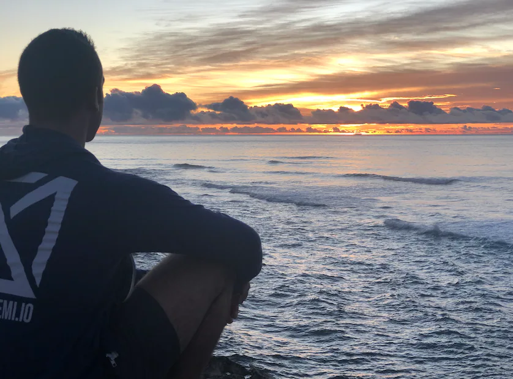

B203 · What if less than 10 minutes could change your life?
Hi {first_name},
What if in less than 10 minutes you could drastically change the outcome of your day, week, month, and life?
 Imagine a day with more energy, more freedom within your body, mind, and spirit. This is exactly what a consistent and well-aligned morning routine has done for me for years, and I am SO DAMN EXCITED to be able to share not one, but 5 different morning routines you can do in less than 10 minutes a day. I wanted to share this little reminder this Wednesday at 9am PST, I will be leading morning routines covering:
If you feel called to do something new, unique, and different to help you become more of a badass in life, I'd love to support you.
Game on, let's do this! ⠀ Click here to sign up for the FREE 5 Day Morning Routine Challenge starting one week from today!
Sending good energy, Mike |